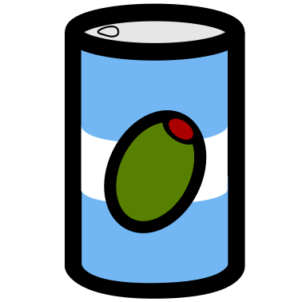

OliveTin
Give safe and simple access to predefined shell commands from a web interface.
See it in action more with some OliveTin demo videos on YouTube.
Use case: Safely give access to commands, for less technical people;
- eg: Give your family a button to podman restart plex
- eg: Give junior admins a simple web form with dropdowns, to start your custom script. backupScript.sh --folder {{ customerName }}
- eg: Enable SSH access to the server for the next 20 mins firewall-cmd --add-service ssh --timeout 20m
Use case: Simplify complex commands, make them accessible and repeatable;
- eg: Expose complex commands on touchscreen tablets stuck on walls around your house. wake-on-lan aa:bb:cc:11:22:33
- eg: Run long-lived commands on your servers from your cell phone. dnf update -y
- eg: Define complex commands with lots of preset arguments, and turn a few arguments into dropdown select boxes. docker rm {{ container }} && docker create {{ container }} && docker start {{ container }}
Features
- Responsive Great for tablets and mobile, with a touch-friendly UI.
- Auto Light/Dark mode For those of you that don't like bright screens.
- Accessible Passes all the accessibility checks in Firefox, and issues with accessibility are taken seriously.
- Linux Container For quickly testing and getting it up and running, great for the selfhosted community.
- Integrate with anything It just runs shell commands - you could integrate with a bunch of stuff just by using curl, ping, etc.
- Lightweight on resources Uses only a few MB of RAM and barely any CPU, written in Go + JS with relatively few dependencies.
- Well tested Well, nobody like bugs, after all!
Configuration Example
YAML - Configuration as code, rather than configuration via a million little options in an admin panel :-)
# Listen on all addresses available, port 1337
listenAddressSingleHTTPFrontend: 0.0.0.0:1337
# Choose from INFO (default), WARN and DEBUG
logLevel: "INFO"
# Actions (buttons) to show up on the WebUI:
actions:
# Docs: https://docs.olivetin.app/solutions/container-control-panel/index.html
- title: Restart Plex
icon: restart
shell: docker restart plex
# This will send 1 ping
# Docs: https://docs.olivetin.app/action_examples/ping.html
- title: Ping host
shell: ping {{ host }} -c {{ count }}
icon: ping
arguments:
- name: host
title: host
type: ascii_identifier
default: example.com
- name: count
title: Count
type: int
default: 1
# Restart http on host "webserver1"
# Docs: https://docs.olivetin.app/action_examples/ssh-easy.html
- title: restart httpd
icon: restart
shell: ssh root@webserver1 'service httpd restart'
Find out all about how to configure OliveTin in the Configuration section of the documentation.
Installation
Installation instructions can be found on the OliveTin installation documentation page.
Open Source & No Nonsense
This project is open source, and feature requests, bugs, security issues and similar can all be raised via the OliveTin new issue page in the OliveTin GitHub repository.
Contributions to documentation, code, and other parts of the project are most welcome. You can find the contribution guidelines in the repository.
- All code and assets are Open Source (AGPL) and free software.
- No company is paying for development, donations & sponsorship are not accepted.
- No separate core and premium, plus or pro version. No paid-for extra features or plugins.
- No SaaS service or "special cloud version".
- No "anonymous data collection", usage tracking, user tracking, telemetry or email address collection. (Note: Update checks in versions prior to 2024.06.02 could be considered unwanted tracking. These were completly removed.).
- No requests for reviews in any "app store" or feedback surveys.
- No prompts to "upgrade to the latest version".
- No internet-connection required for any functionality.